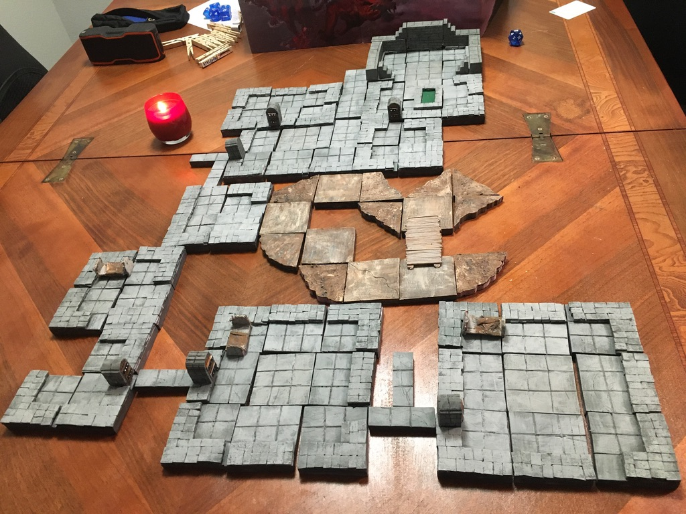

Here are a few of the things I do when I have time:
I enjoy the process of growing something. Would I say I have a green thumb? Possibly not since it takes me several tries for plants not to die, but I appreciate the process anyways. I truly believe that it would greatly benefit us to do things with our hands. Here's a picture of me with my first ever vegetable successfully planted, a radish!

Volunteering is one way I connect with the community around me. I've volunteered at the Madison's Children Museum, the Beacon (a facility for the unhoused population), and Citizens' Climate Lobby. Here is a picture of me in front of the white house preparing to do some climate lobbying (first lobbying experience).
This mainly includes things like tabletop roleplaying games such as Dungeons and Dragons, Pathfinder, etc. I used to make fantasy terrains for campaigns as shown in the following picture.
It also includes reading and watching fantasy and science fiction - I am a big fan of Ursula K Le Guin. This is closely related with another hobby I'd like to get back to, creative writing.
I like dancing, almost any kind. My favorite type is swing. I also enjoy ballroom dancing, particularly foxtrot due to its fun rhythm. I frequently go to Badgers' Ballroom Dance Team, and we'll see if I participate in any competition in the future. In an ideal world, I'd be playing the keyboard more, not that I'm good at it. I do think it's fun when I don't pressure myself to stick to the score.